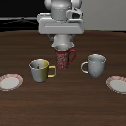

The question that started Kintsugi
Can a robot
be hacked
through an API?
Can a Vision-Language-Action model be redirected using only API inputs and outputs—and how few queries would it take?
Why it matters. When AI controls physical machines, a model vulnerability can become a physical failure—in factories, labs, and safety-critical systems.
01 / Why I started
How little
access is enough?
I started Kintsugi to investigate a possibility: could someone redirect a robotic model without seeing its weights or gradients, using only the responses exposed by an API?
Efficiency is central to that question. If a small query budget can uncover a reliable attack, the barrier to exploitation could fall as these models are deployed more widely.
In factories, research labs, and safety-critical settings, unintended actions can carry physical consequences. The aim is to understand the access required, the queries spent, and whether an effect survives actual robot execution.
Follow the investigation
One instruction. One observation. What action does the model predict?
02 / The method
Finding the
fault lines.
Three stages of investigation.
From the shape of meaning to the search for a fracture.
Give language a measurable shape.
Explore this phase03 / The experiment
A window into
the search.
The explorer is ready for the run.
Inspect a recorded snapshot while the study continues.
Optimization trace
— / 60 iterationsObservation
Task 2Saved frame · fixed robot state
Grasp blue box on counter, put it on burner, rotate the knob to turn off and then end the task.
The selected instruction will appear here.
Changes will be highlighted against the search baseline.From instruction to action
Mean first-action components across the evaluation images and passes.
How close a predicted action is to a chosen target, using a combined direction and weighted error objective.
Held-out observations, paired simulator rollouts, and broader evaluation across tasks and random seeds.
Same scene. Two instructions.
A paired robot rollout will go here after simulator evaluation.
04 / Research notes
Understanding
the fracture is
the first step.
金継ぎ — The art of joining with gold.
A name for studying vulnerabilities so they can be understood and, eventually, addressed.
01 What this study can tell us
The current experiment studies one model checkpoint on saved LIBERO images. Its objective measures action proximity to a fixed target. An improved objective alone does not establish physical task failure or a universal attack.
02 Reading the results carefully
Observations share a fixed robot-state vector, and frames may be temporally related. The search changes synonyms and suffix words; reconstructed instructions can also differ from the untouched prompt. The explorer keeps the untouched and search baselines separate.
03 Reproducibility, in the open
Run artifacts retain model revision, seed, image hashes, tested prompts, per-image actions, and objective values. The source repository includes the environment definition and experimental pipeline.
Browse the research code ↗An open investigation